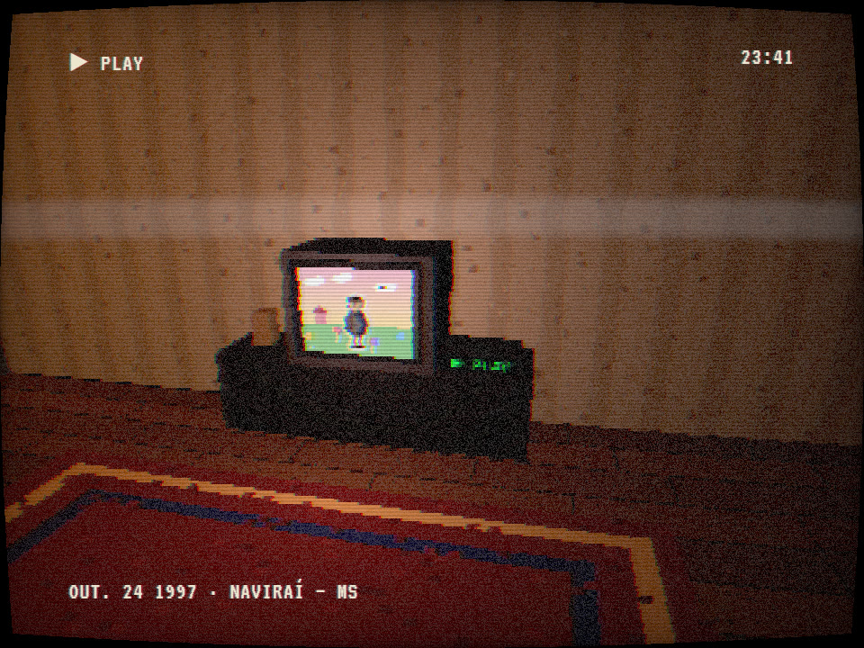
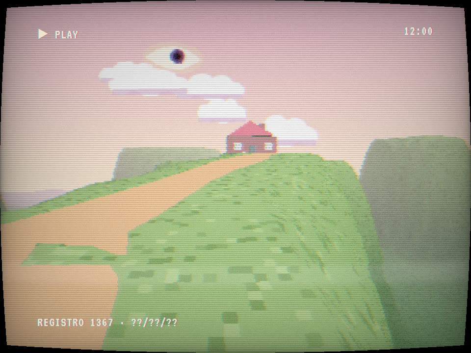
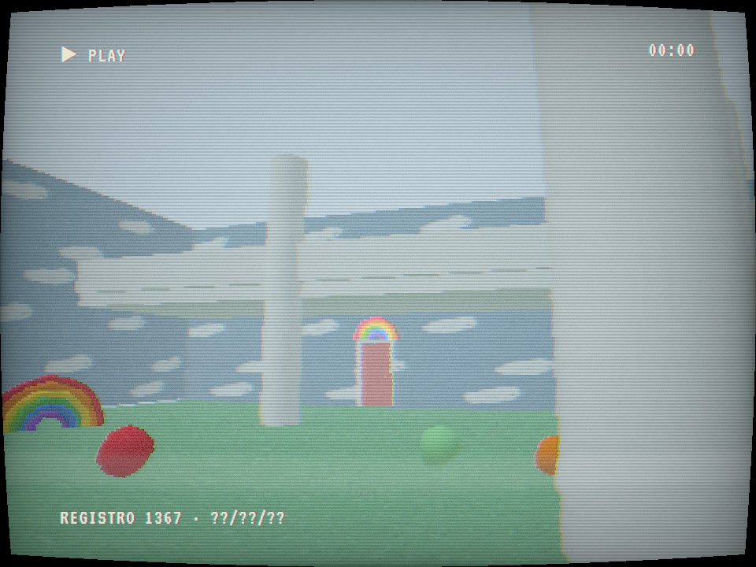

REGISTRO 1367
Um jogo curto de terror dreamcore em primeira pessoa, no estilo PS1 e fita VHS. Já passou da meia-noite. Na estante tem uma fita que você nunca viu. Ele não fala. Só assobia.

O que é
Registro 1367 é um protótipo de jogo do Arquivo Passarex, inspirado na lore d’Os Bacanos: o Passarex, o pássaro com cabeça de gente que aparece parado ao longe em Naviraí e só assobia. Você assiste a uma fita velha do “Canal dos Passarinhos” e é puxado para dentro dela.
Lá dentro tem colinas de sonho com uma casinha rosa, salas amarelas que não terminam e uma sala de brincar com oito portas. Tem escolhas que mudam o quanto ele te notou, pistas escondidas, uma fuga e alguns sustos.
Prints






Como a gente fez
O jogo foi feito por oDavyy conversando com o Claude Code, o agente de programação da Anthropic, numa mesma tarde. O Davy dava a direção (referências, clima, o que estava bom ou não) e o Claude planejava, programava, testava no navegador e ajustava. O código do jogo não está publicado aqui. Esta página só conta o processo.
- Primeiro o plano. Antes de programar, fizemos um plano curto: duração, quem é o jogador, quantos finais, quais lugares e uma lista de etapas pequenas para testar o clima cedo.
- Visual de PS1 e fita VHS. É um jogo 3D que roda no navegador. A imagem é desenhada em 320×240 e ampliada, os vértices “tremem” como no PlayStation 1, tem névoa, e por cima vai um filtro de TV de tubo: tela curva, linhas, ruído, cor vazando e a faixa de tracking.
- O Passarex continua sendo o desenho da série. Em vez de virar um boneco 3D diferente, o desenho 2D original vira uma figurinha recortada dentro do mundo 3D, sempre virada para você. Colorido nos lugares de sonho, em silhueta com os olhos acesos no escuro.
- Lugares de sonho. A sala de casa de 1997, colinas em forma de mesa ligadas por uma crista (com um olho no lugar do sol), salas amarelas no estilo backrooms montadas como labirinto e uma sala de brincar com nuvens, mezanino, bolinhas que dá para chutar e arco-íris.
- Vozes geradas no próprio PC. As falas foram geradas no VoiceStudio local. O Passarex tem voz mais aguda, de criança, passada por um filtro de rádio com engasgos, quedas de sinal e chiado. O narrador do “Arquivo” tem cara de fita velha.
- Som feito na hora. A caixinha de música desafinada, o zumbido das lâmpadas, o telefone, o vento, os passos e o “fiu fiu” são sintetizados pelo navegador enquanto você joga. Não tem arquivo de som, só as vozes.
- Sustos e uma fuga leve. Alguns quadros rápidos do rosto, falhas de tela com texto e uma fuga nas salas amarelas: ele vem atrás de você, mais devagar que você. Se te pegar, aparece “SINAL PERDIDO” e você volta de onde a fuga começou.
- Nunca fica perdido. O botão de dica mostra o que fazer e solta um passarinho amarelo que voa mostrando o caminho e espera por você.
- Celular e publicação. Joystick na tela, arrastar para olhar, botões grandes e tela cheia na horizontal. O jogo inteiro tem uns 1,2 MB e foi publicado no itch.io.
Créditos e direitos
Passarex, o Arquivo Passarex, os personagens e toda a lore pertencem a Os Bacanos. Todos os direitos reservados. Este jogo é um projeto de fã inspirado no universo deles, sem fins lucrativos.
Feito por: oDavyy, com Claude Code.
Veja também: Passarex · Fiu Fiu, 1491 · Elenco do Clubex · @os_bacanos67
Contém sustos repentinos, luzes piscando e sons altos.